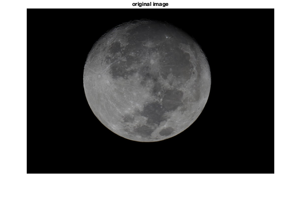
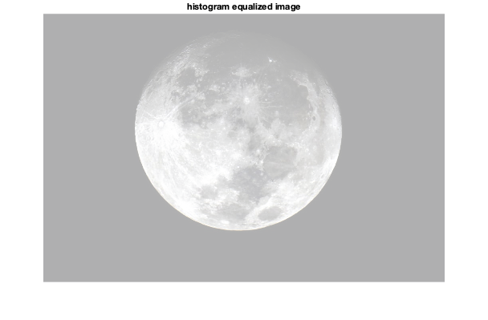
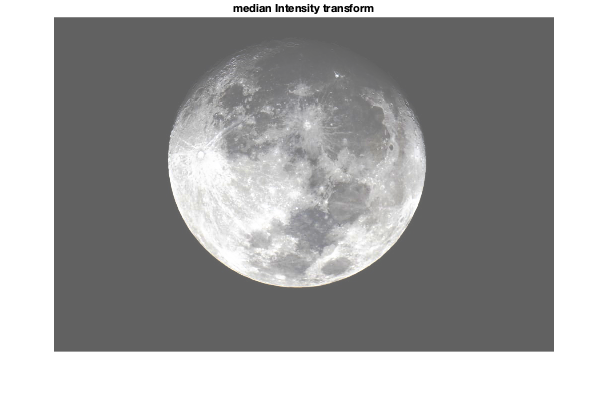
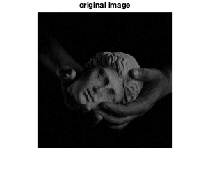
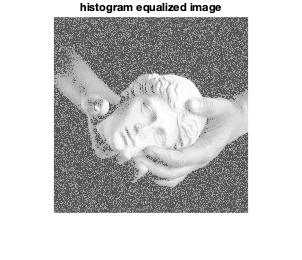
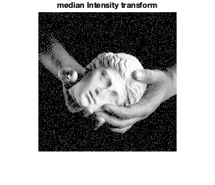

Contents
MyMainScript
tic;
Your code here
Q3 Main Script
CS 663: Digital Image Processing, IIT Bombay (Autumn 2020) Aman Kansal, Ansh Khurana, Kushagra Juneja
clc; clear all; close all;
3d.
Using median based histogram equalization Following notation in written answer, for 0<h'(I)<a -> h'(T(I)) = p1 and h'(T(I)) = p2 otherwise. alpha = 0.5, a = median_intensity example images, statues.png and moon.png
For moon
Source: https://images.unsplash.com/photo-1575973782464-105a49c6a302?ixlib=rb-1.2.1&w=1000&q=80
img = imread('../data/moon.jpeg'); displayImage(img, 'original image', 'moon_orig'); % Histogram equalized image equalized_image = zeros(size(img)); equalized_image(:,:,1) = myHE(img(:,:,1)); equalized_image(:,:,2) = myHE(img(:,:,2)); equalized_image(:,:,3) = myHE(img(:,:,3)); displayImage(equalized_image, 'histogram equalized image', 'moon_he_normal'); % code for median based intensity transformation counts = imhist(img); counts = cumsum(counts); img_cdf = counts/counts(end); assignin('base','img_cdf', img_cdf); % just greater than 0.5 for i = 1:256 if img_cdf(i)>0.5 median_intensity = i; break end end % img_cdf = uint8(img_cdf*255); median_intensity = median_intensity/255.0; p1 = 0.5/(median_intensity); p2 = 0.5 / (1-median_intensity); transformed_cdf = zeros(1,256); for i = 1:256 if img_cdf(i) < median_intensity transformed_cdf(i) = img_cdf(i) / p1; else transformed_cdf(i) = median_intensity + (img_cdf(i)-0.5)/ p2; end end % assignin('base','t_cdf', transformed_cdf); transformed_cdf = uint8(255*transformed_cdf); result = transformed_cdf(img+1); displayImage(result, 'median Intensity transform', 'moon_he_median'); toc;
Elapsed time is 2.201835 seconds.  
For statue
img = imread('../data/statue.png'); displayImage(img, 'original image', 'statue_original'); he_img = myHE(img); displayImage(he_img, 'histogram equalized image', 'statue_he_normal'); % code for median based intensity transformation counts = imhist(img); counts = cumsum(counts); img_cdf = counts/counts(end); assignin('base','img_cdf', img_cdf); % just greater than 0.5 for i = 1:256 if img_cdf(i)>0.5 median_intensity = i; break end end % img_cdf = uint8(img_cdf*255); median_intensity = median_intensity/255.0; p1 = 0.5/(median_intensity); p2 = 0.5 / (1-median_intensity); transformed_cdf = zeros(1,256); for i = 1:256 if img_cdf(i) < median_intensity transformed_cdf(i) = img_cdf(i) / p1; else transformed_cdf(i) = median_intensity + (img_cdf(i)-0.5)/ p2; end end % assignin('base','t_cdf', transformed_cdf); transformed_cdf = uint8(255*transformed_cdf); result = transformed_cdf(img+1); displayImage(result, 'median Intensity transform', 'statue_he_median'); toc;
Elapsed time is 4.062951 seconds.  